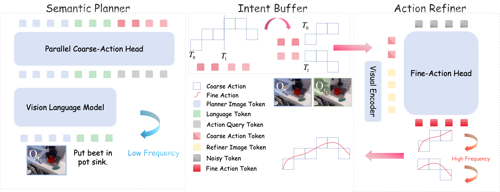
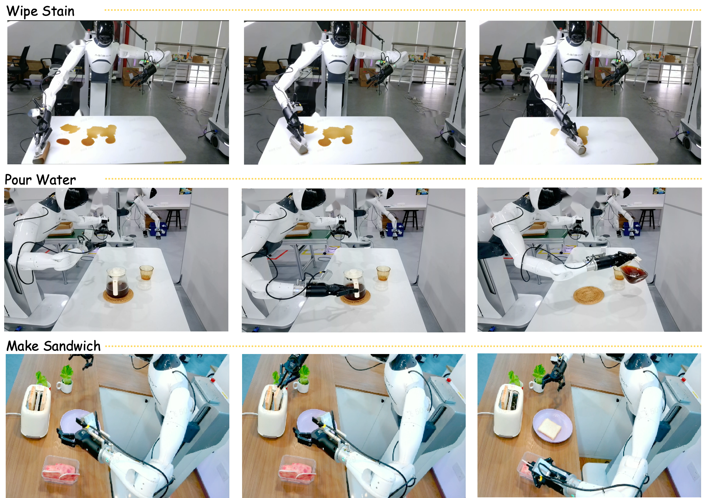

Vision-Language-Action (VLA) models have emerged as a promising paradigm for generalist robotic manipulation by grounding high-level semantic instructions into executable physical actions. However, prevailing approaches typically adopt a monolithic generation paradigm, attempting to map high-level visual-linguistic features directly to high-frequency motor commands in a flat, non-hierarchical fashion. This strategy overlooks the inherent hierarchy of robotic manipulation, where complex actions can be naturally modeled in a Hybrid Action Space, decomposing into discrete macro-directional reaching and continuous micro-pose alignment.
To address this, we introduce Libra-VLA, a novel Coarse-to-Fine Dual-System VLA architecture. Our core insight is twofold: we explicitly decouple the learning complexity into a coarse-to-fine hierarchy to strike a training equilibrium, while simultaneously leveraging this structural modularity to implement an asynchronous execution strategy. Specifically, our architecture integrates: (1) Semantic Planner, which focuses on macro-intent, predicting discrete action tokens that guide the robot's general direction, and (2) Action Refiner, which conditions on the coarse intent to generate high-frequency continuous actions for precise pose alignment.
Crucially, our empirical analysis reveals that performance follows an inverted-U curve relative to the granularity of action decomposition. We demonstrate that Libra-VLA achieves best performance exactly when the learning difficulty is balanced between the two sub-systems. Combined with the asynchronous design, our approach offers a scalable, data-efficient, and responsive solution for open-world manipulation.

We factorize the joint policy distribution into two conditional stages. The Semantic Planner (System 2) leverages a pre-trained VLM (InternVL2.5-2B) to predict coarse directional tokens via parallel decoding, trained with Cross-Entropy loss. The Action Refiner (System 1) employs a Diffusion Transformer with an independent SigLIP visual encoder, conditioned on the planner's macro-intent to synthesize precise continuous actions, trained with MSE loss.
The asynchronous execution strategy further decouples inference costs: the Semantic Planner predicts an extended macro-horizon Lmacro = M × Hchunk in a single pass, filling an intent buffer (FIFO queue). The Action Refiner then operates at high frequency by consuming buffered intents, significantly reducing average inference latency.
| Methods | Action Space | Spatial | Object | Goal | Long | Avg. |
|---|---|---|---|---|---|---|
| CoT-VLA | Discrete | 87.5 | 91.6 | 87.6 | 69.0 | 81.1 |
| WorldVLA | Discrete | 87.6 | 96.2 | 83.4 | 60.0 | 81.8 |
| OpenVLA | Discrete | 84.7 | 88.4 | 79.2 | 53.7 | 76.5 |
| π0-FAST | Discrete | 96.4 | 96.8 | 88.6 | 60.2 | 85.5 |
| DD-VLA | Discrete | 97.2 | 98.6 | 97.4 | 92.0 | 96.3 |
| Diffusion Policy | Continuous | 78.3 | 92.5 | 68.3 | 50.5 | 72.4 |
| Octo | Continuous | 78.9 | 85.7 | 84.6 | 51.1 | 75.1 |
| DreamVLA | Continuous | 97.5 | 94.0 | 89.5 | 89.5 | 92.6 |
| GO-1 | Continuous | 96.2 | 97.8 | 96.0 | 89.2 | 94.8 |
| GR00T-N1 | Continuous | 94.4 | 97.6 | 93.0 | 90.6 | 93.9 |
| F1 | Continuous | 98.2 | 97.8 | 95.4 | 91.3 | 95.7 |
| GE-Act | Continuous | 98.2 | 97.6 | 95.8 | 94.4 | 96.5 |
| π0 | Continuous | 96.8 | 98.8 | 95.8 | 85.2 | 94.1 |
| π0.5 | Continuous | 98.8 | 98.2 | 98.0 | 92.4 | 96.9 |
| Libra-VLA (Ours) | Hybrid | 98.6 | 99.4 | 98.0 | 92.8 | 97.2 |
| Methods | Action Space | Camera | Robot | Language | Light | Background | Noise | Layout | Avg. |
|---|---|---|---|---|---|---|---|---|---|
| OpenVLA | Discrete | 0.8 | 3.5 | 23.0 | 8.1 | 34.8 | 15.2 | 28.5 | 15.6 |
| WorldVLA | Discrete | 0.1 | 27.9 | 41.6 | 43.7 | 17.1 | 10.9 | 38.0 | 25.0 |
| NORA | Discrete | 2.2 | 37.0 | 65.1 | 45.7 | 58.6 | 12.8 | 62.1 | 39.0 |
| π0-FAST | Discrete | 65.1 | 21.6 | 61.0 | 73.2 | 73.2 | 74.4 | 68.8 | 61.6 |
| UniVLA | Continuous | 1.8 | 46.2 | 69.6 | 69.0 | 81.0 | 21.2 | 31.9 | 42.9 |
| π0* | Continuous | 79.6 | 21.1 | 72.5 | 84.7 | 86.2 | 68.3 | 69.4 | 67.4 |
| OpenVLA-OFT | Continuous | 56.4 | 31.9 | 79.5 | 88.7 | 93.3 | 75.8 | 74.2 | 69.6 |
| OpenVLA-OFT+ | Continuous | 92.8 | 30.3 | 85.8 | 94.9 | 93.9 | 89.3 | 77.6 | 79.6 |
| π0.5* | Continuous | 70.3 | 41.7 | 81.1 | 97.3 | 94.6 | 71.8 | 84.9 | 75.7 |
| Libra-VLA (Ours) | Hybrid | 94.5 | 41.8 | 83.2 | 95.3 | 94.3 | 93.7 | 75.3 | 82.3 |
Performance follows an inverted-U curve relative to bin granularity (N). The learning equilibrium is at N=10, where coarse tokens provide sufficient guidance without overwhelming the planner.
| VE | Refine | Bin (N) | Spatial | Object | Goal | Long | Avg. |
|---|---|---|---|---|---|---|---|
| ✗ | ✓ | 2 | 95.8 | 97.6 | 95.4 | 80.2 | 92.3 |
| ✗ | ✓ | 10 | 98.6 | 98.6 | 96.0 | 87.0 | 95.1 |
| ✗ | ✓ | 50 | 96.0 | 96.4 | 78.2 | 79.4 | 87.5 |
| ✗ | ✓ | 100 | 94.0 | 95.0 | 70.8 | 75.6 | 83.9 |
| ✓ | ✓ | 2 | 97.0 | 98.6 | 38.6 | 81.8 | 79.0 |
| ✓ | ✓ | 10 | 98.6 | 99.4 | 98.0 | 92.8 | 97.2 |
| ✓ | ✓ | 50 | 96.8 | 98.4 | 95.0 | 89.2 | 94.9 |
| ✓ | ✓ | 100 | 95.4 | 96.8 | 92.8 | 90.4 | 93.9 |
The Coarse-to-Fine paradigm (Refine) is the primary performance driver (+6.8%), while the independent Visual Encoder (VE) provides further gains through structural decoupling.
| Model | VE | Refine | Spatial | Object | Goal | Long | Avg. |
|---|---|---|---|---|---|---|---|
| Libra-Base | ✗ | ✗ | 95.8 | 95.4 | 86.0 | 76.0 | 88.3 |
| Libra-VE | ✓ | ✗ | 94.8 | 94.6 | 69.2 | 89.4 | 87.0 |
| Libra-Refinement | ✗ | ✓ | 98.6 | 98.6 | 96.0 | 87.0 | 95.1 |
| Full (Ours) | ✓ | ✓ | 98.6 | 99.4 | 98.0 | 92.8 | 97.2 |
Increasing the Horizon Expansion Factor (M) substantially reduces inference latency while maintaining high success rates, thanks to the spatial tolerance of coarse quantization.
| Factor (M) | Spatial | Object | Goal | Long | Avg. | Latency (ms) | Reduction |
|---|---|---|---|---|---|---|---|
| 2 | 98.6 | 99.4 | 98.0 | 92.8 | 97.2 | 122 | 44.5% |
| 3 | 97.6 | 99.2 | 94.2 | 93.8 | 96.2 | 112 | 49.1% |
| 4 | 97.4 | 99.8 | 93.2 | 93.8 | 96.1 | 107 | 51.4% |
| 5 | 97.8 | 98.8 | 92.0 | 92.4 | 95.3 | 104 | 52.7% |
Evaluated on AgiBot G1 robot platform across three long-horizon tasks.

| Methods | Wipe Stain | Pour Water | Make Sandwich | Avg. |
|---|---|---|---|---|
| GO-1 | 66.7 | 33.3 | 33.3 | 44.4 |
| π0 | 75.0 | 50.0 | 33.3 | 52.8 |
| Libra-VLA (Ours) | 75.0 | 83.3 | 50.0 | 69.4 |